|
Ananya Trivedi Hello.. My name is Ananya Trivedi. I completed my M.S. in Electrical & Computer Engineering at the University of Michigan, where I focused on signal processing and control systems. Following this, I worked at Torc Robotics as a Motion Planning & Controls Software Engineer, developing algorithms for high-level decision-making and path planning in autonomous driving systems. Currently, I am a Ph.D. student and Research Assistant in the RIVeR Lab at Northeastern University, where I focus on robust motion planning and control for robotic systems under uncertainty. During my Ph.D., I interned at Honda Research Institute USA and Mitsubishi Electric Research Laboratories (MERL), where I developed robust motion planning strategies. |
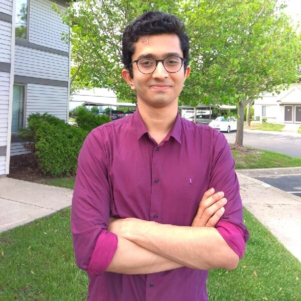 |

ProjectsMy research centers on developing robust, computationally efficient, and verifiable algorithms for motion planning and control under uncertainty. By integrating data-driven approaches with stochastic optimal control, I aim to create principled methods that deliver reliable performance across diverse robotic platforms. |
|
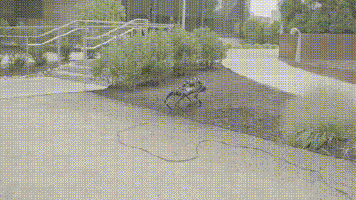 |
Chance-Constrained Convex MPC for Robust Quadruped Locomotion Under Parametric and Additive Uncertainties
Ananya Trivedi, Sarvesh Prajapati, Mark Zolotas, Michael Everett, Taşkın Padır
IEEE Robotics and Automation Letters (RA-L) 2025 — Best Paper Finalist (Top 3), IEEE RAS Technical Committee on Optimization for Robotics
Chance-constrained MPC for robust quadruped locomotion under payload and terrain uncertainty, posed as a real-time convex QP with probabilistic friction-cone constraints; deployed on a Unitree Go1. Project Page / Code / Video / arXiv |
|
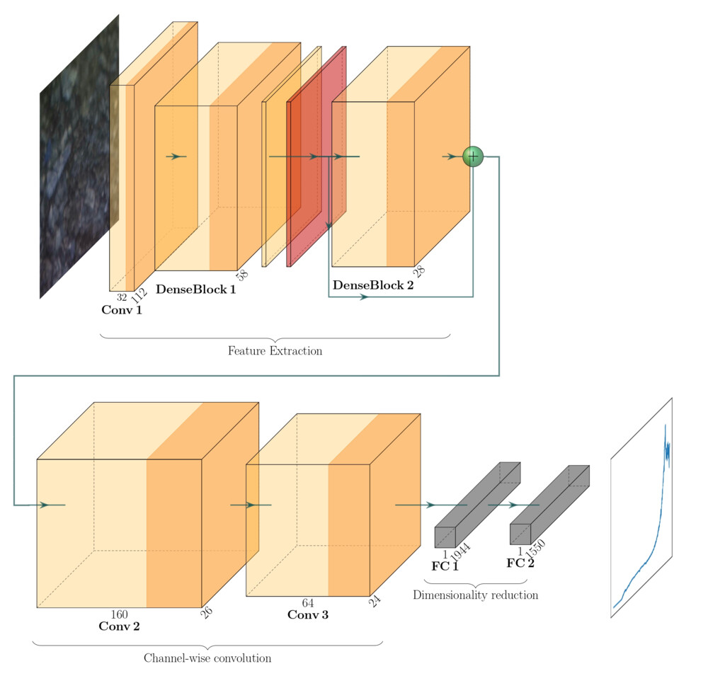 |
Spectral Signature Mapping from RGB Imagery for Terrain-Aware Navigation
Sarvesh Prajapati, Ananya Trivedi, Nathaniel Hanson, Bruce Maxwell, Taşkın Padır
IEEE International Conference on Robotic Computing and Communications (RoboticCC) 2025 — Best Paper Award
Earlier version: IEEE ICRA 2024, Workshop on Resilient Off-road Autonomy RGB-to-spectral neural network estimating terrain class and friction for MPPI planning (Clearpath Jackal) and quadruped MPC (Unitree Go1). Code / arXiv / Workshop Paper / Workshop Poster / Workshop Code |
|
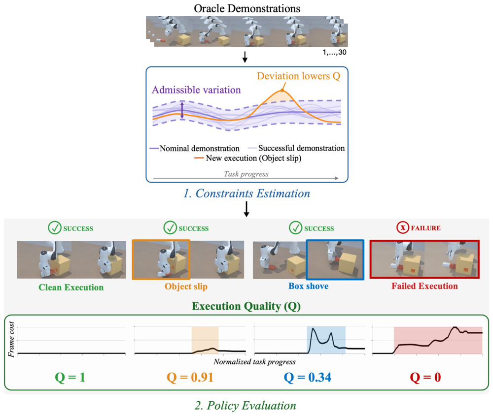 |
Shades of Success: Characterizing Manipulation Quality through Object-Centric Constraints
Lorena Maria Genua, Sarvesh Prajapati, Ananya Trivedi, Taşkın Padır
Geometry in Robotics Workshop, IEEE/RSJ IROS 2026 — Best Paper Nominee, Spotlight Talk
Object-centric manipulation quality metric that learns SE(3) task constraints from demonstrations, with VLM-based task segmentation, to grade imitation-learning and VLA data beyond binary success. |
|
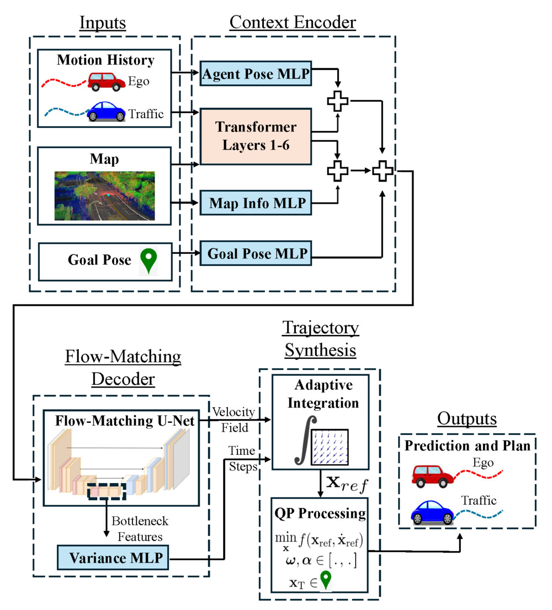 |
Adaptive Time Step Flow Matching for Autonomous Driving Motion Planning
Ananya Trivedi, Anjian Li, Mohamed Elnoor, Yusuf Umut Ciftci, Avinash Singh, Jovin D’sa, Sangjae Bae, David Isele, Taşkın Padır, Faizan M. Tariq
IEEE Intelligent Vehicles Symposium (IV) 2026 — Spotlight Paper (Top 8%)
Work done at Honda Research Institute USA Real-time flow-matching motion planner for autonomous driving (Waymo dataset), outperforming diffusion and consistency models in trajectory quality; optimized inference via ONNX and TensorRT. |
|
Accelerating Optimization over Graphs of Convex Sets via Neural Network Approximations
Ananya Trivedi, Sarvesh Prajapati, Zhexin Xu, Mohamed Khalid M Jaffar, David Rosen, Taşkın Padır
Under Review, IEEE ICRA 2027
Learning-accelerated Graphs of Convex Sets motion planning for quadrotors, 7-DoF arm manipulation, and contact-rich manipulation via a graph attention network. |
|
|
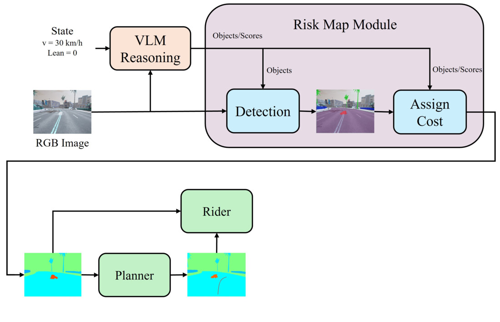 |
VLM-Based Advanced Rider Assistance System for Motorcycle Safety
Mohamed Elnoor, Francesca Baldini, Ananya Trivedi, Faizan M. Tariq, Jovin D’sa, David Isele, Sangjae Bae, Dinesh Manocha, Yosuke Sakamoto
IEEE Intelligent Vehicles Symposium (IV) 2026
Work done at Honda Research Institute USA VLM-based motorcycle rider assistance: chain-of-thought GPT-4o hazard reasoning and open vocabulary segmentation for risk-aware sampling-based planning in CARLA. |
|
Socially-Aware Autonomous Doorway Traversal and Payload Delivery for Emergency Assistance
Andrew Snowdy, Ananya Trivedi, Sarvesh Prajapati, Lorena Maria Genua, Taşkın Padır
arXiv 2026
Mobile manipulation for emergency assistance on a Toyota HSR: behavior-tree task selection, YOLO perception, and inverse kinematics for door opening and payload retrieval. |
|
|
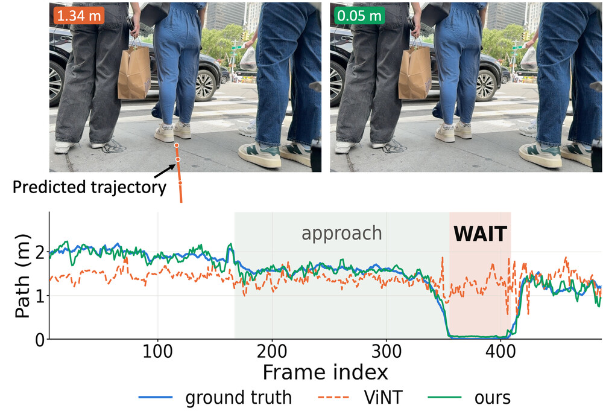 |
Universal Navigation Interface: Robot-Free Data for Wheeled Robot Navigation
Sarvesh Prajapati, Ananya Trivedi*, Lorena Maria Genua*, Drake Moore, Bruce Maxwell, Taşkın Padır * Equal contribution
Under Review, IEEE ICRA 2027
Robot-free navigation data from a rollator and smartphone for fine-tuning navigation foundation models (ViNT, NoMaD, GNM), with transfer to an autonomous wheelchair. |

|
Data-Driven Sampling-Based Stochastic MPC for Skid-Steer Mobile Robot Navigation
Ananya Trivedi, Sarvesh Prajapati, Anway Shirgaonkar, Mark Zolotas, Taşkın Padır
IEEE International Conference on Robotics and Automation (ICRA) 2025
GPU-accelerated chance-constrained MPPI with Gaussian-process dynamics for high-speed off-road navigation; path tracking and obstacle avoidance on a Clearpath Jackal. Project Page / Code / Video / arXiv |
|
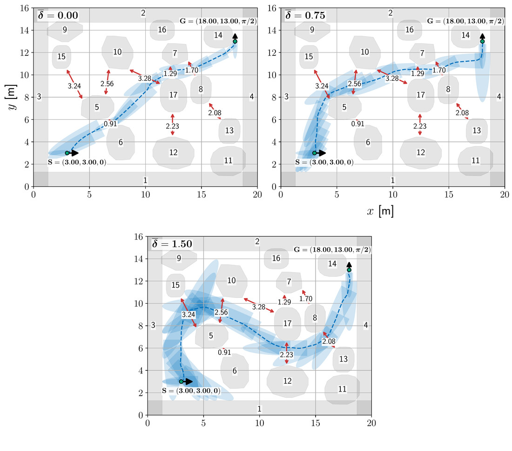 |
Robust Set-Based Motion Planner for Unicycles Under Bounded Disturbances
Ananya Trivedi, Stefano Di Cairano, Jordan Leung
Under Review, American Control Conference (ACC) 2027
Work done at Mitsubishi Electric Research Laboratories (MERL) GPU-parallelized, real-time, certifiably safe off-road motion planner using Lyapunov analysis. |
|
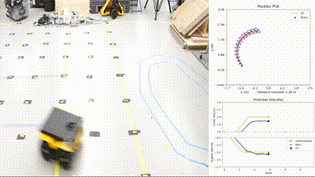 |
A Probabilistic Motion Model for Skid-Steer Wheeled Mobile Robot Navigation on Off-Road Terrains
Ananya Trivedi, Mark Zolotas, Adeeb Abbas, Sarvesh Prajapati, Salah Bazzi, Taşkın Padır
IEEE ICRA 2024, IEEE ICAA 2023 (Workshop)
Gaussian-process motion model for off-road skid-steer robots (Clearpath Jackal), capturing tire slip with uncertainty propagation and online terrain adaptation; builds on probabilistic dynamics modeling of tire skid and slip with sampling-based stochastic MPC (ICAA 2023). |
|
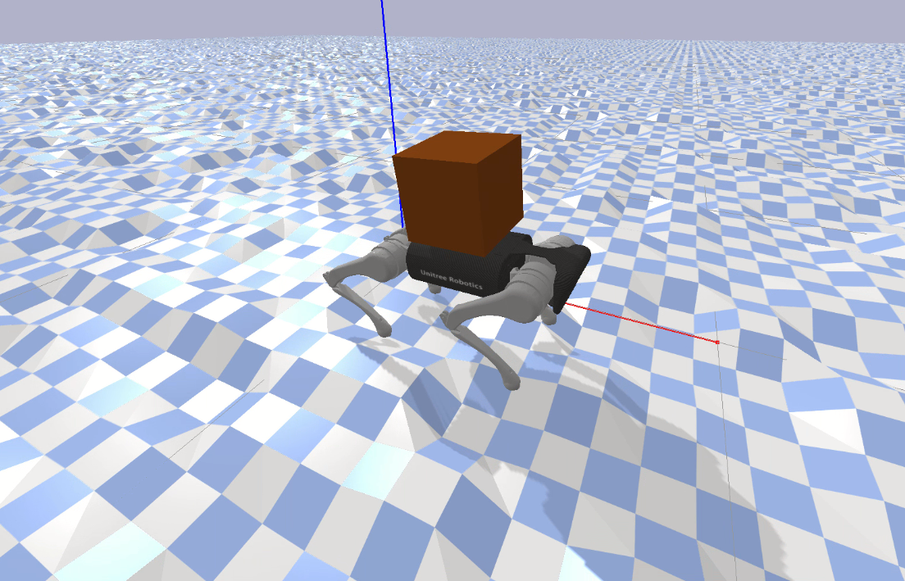 |
Online Refinement of Uncertainty Sets for Robust MPC of Quadrupedal Robots Using Convex Cone Programming
Ananya Trivedi, Sarvesh Prajapati, Mark Zolotas, Taşkın Padır
IEEE ICRA 2024, Workshop on Advancements in Trajectory Optimization and Model Predictive Control for Legged Systems
Adaptive robust MPC for quadruped locomotion that refines model and friction uncertainty sets online via convex cone programming to reduce conservatism. |
|
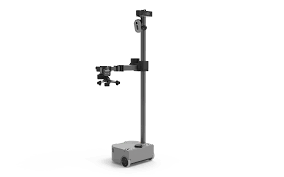 |
Supporting Aging In Place Through Multimodal Sensing
|
|
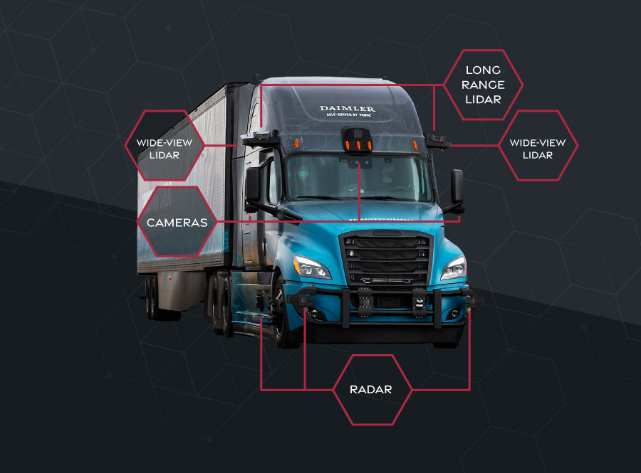 |
Motion Planning & Controls Software Engineer -- Torc Robotics
|
|
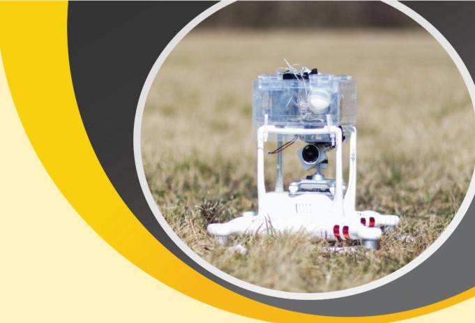 |
Atmospheric Sensing with Miniaturized Robotic Vehicles -- MDP
|